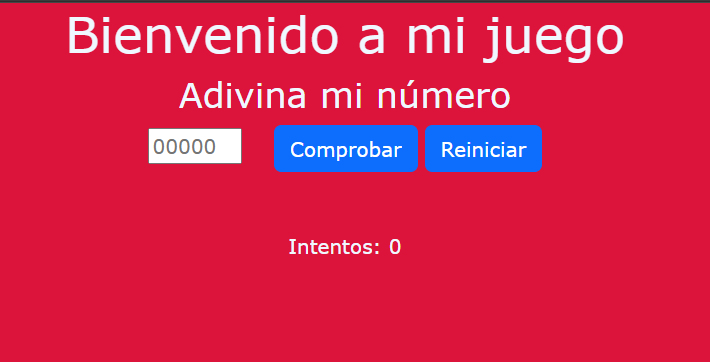

Belén Bulacio
Estudiante de Programación
Aprendiendo desarrollo web y construyendo mis primeras experiencias en el mundo IT
ContáctameExperiencia Laboral
Soporte Técnico IT y Operadora de monitoreo y videoconferencias - SPPT
GESTIÓN DE TIC
Garantizando la continuidad operativa
- Monitoreo de sistemas y servicios informáticos
- Soporte técnico a usuarios en oficinas (hardware y software)
- Instalación y configuración de paquetes de Software (ej. Microsoft Office, AutoCAD)
- Armado y mantenimiento de equipos informáticos
- Resolución de incidencias en redes e internet
- Gestión y soporte de videoconferencias
- Atención y resolución de problemas técnicos en tiempo real
Proyectos Personales

Formación Académica
Tecnicatura Universitaria en Programación
UTN - en curso
Formación en desarrollo de software y lógica de programación
- Fundamentos de programación
- Estructuras básicas
- Resolución de problemas y lógica computacional
Curso de Desarrollo Web
freeCodeCamp
Práctica en tecnologías frontend
- HTML y CSS
- Estructuras de páginas web
- Uso básico de GitHub
Curso de Python
Santander Academy
Introducción a la programación con Python
- Variables y estructuras básicas
Contacto
belenbulacio66@gmail.com
WhatsApp